Android 安卓智能手机操作教程
作者：TeliuTe 来源：基础教程网
二十一、手机卫士 返回目录 下一课本节我们学习手机卫士的各项操作；
1、360手机卫士
1）到官网上下载安装包：http://shouji.360.cn/，也可以在应用市场中下载；
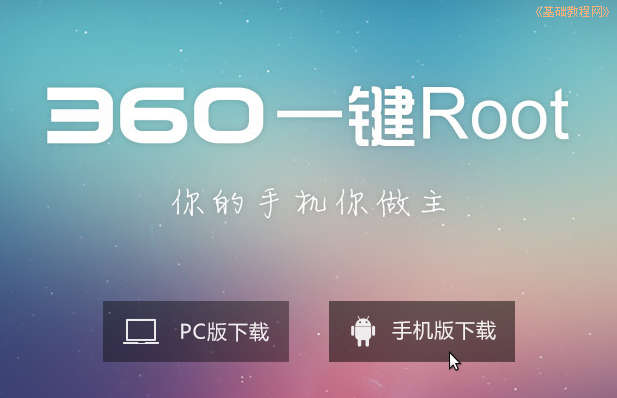
2）安装完成后，点“所有程序”里找，第一页没有就找第二页里，点按运行；
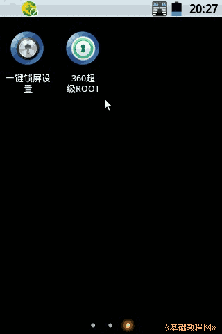
3）主界面显示的是健康状况和常用功能，包括清理加速、花费流量、骚扰拦截、防吸费、支付保镖和手机杀毒等；
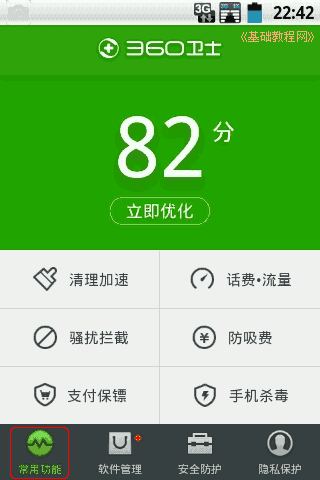
4）点击“清理加速”，可以清理当前运行的程序，缓存文件，程序安装包；
5）点按右上角的齿轮图标，可以设置忽略的内存程序和安装包，清理时不会清理它们；
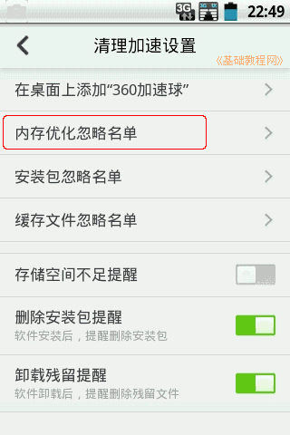
2、话费流量
1）返回主界面，点击“话费流量”，可以查看话费余额和剩余流量，点按它们可以查询校准余额流量；
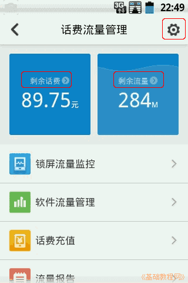
2）点按右上角齿轮，可以设置手机运营商，流量监控等；
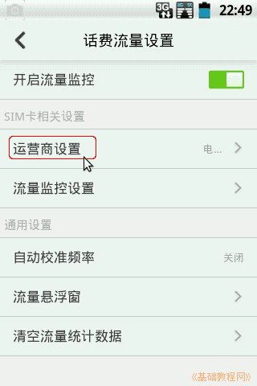
3）点按返回一级，在锁屏流量监控里，可以查看锁屏期间消耗流量的软件；
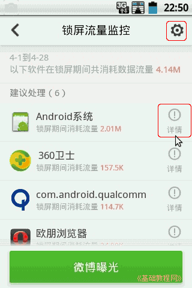
4）点按“软件流量管理”里，可以查看联网软件以及消耗流量，开启Root功能后，可以设置仅在wifi下联网，不消耗套餐的数据流量；
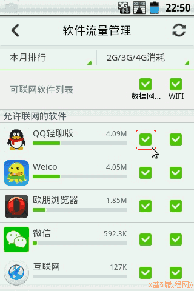 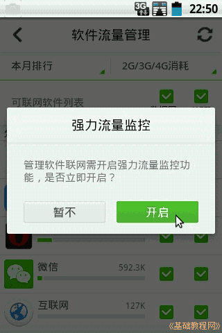
3、骚扰拦截
1）点按主界面的骚扰拦截，可以查看拦截的短信和电话；
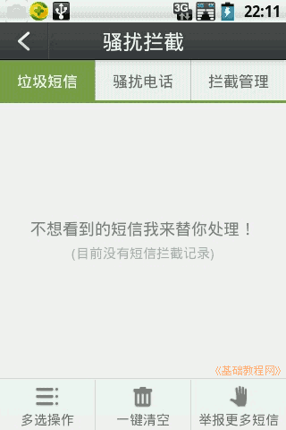
2）点按拦截管理，可以管理黑名单和白名单，黑名单是已拦截的骚扰号码，可以手动添加；
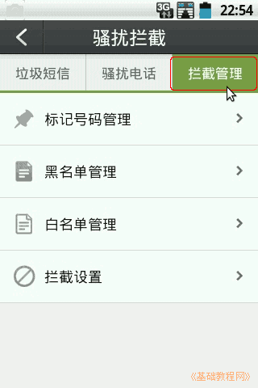
3）点按管理里的拦截设置，可以对拦截规则，拦截提示进行设置；
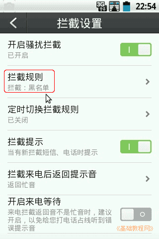
4、防吸费
1）回到主界面，点按“防吸费”，可以查杀吸费软件、偷流量和恶意短信和电话等；
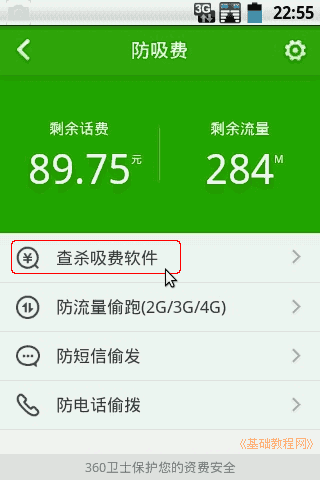
2）点按可以进入扫描处理；
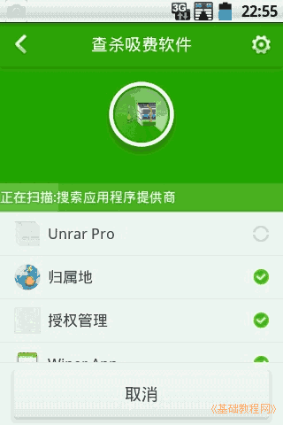
5、手机杀毒
1）点按手机杀毒，可以扫描系统安全，修复漏洞等；
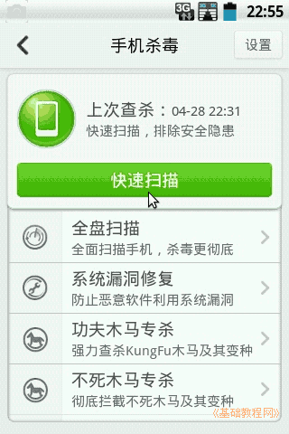
2）点击“快速扫描”，可以对重要位置进行扫描查杀；
6、其他功能
1）点按返回主界面，点下边的第二个标签“软件管理”，可以搜索、更新、卸载软件，将应用程序移到SD卡等；
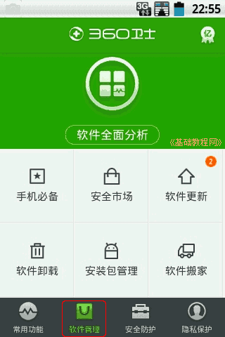 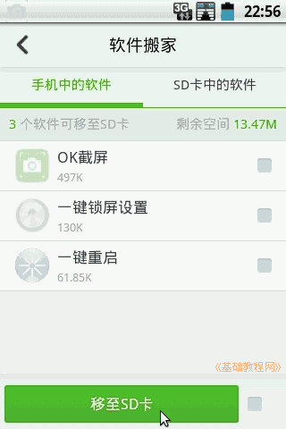
2）点按返回，点第三个标签“安全防护”，可以进入超强模式，各项安全防护，以及检测系统信息等；
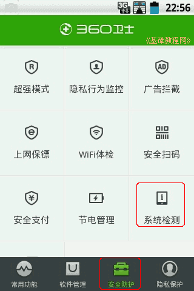
3）点按返回，点第四个标签“隐私保护”，可以备份资料，清理隐私，程序设置等；
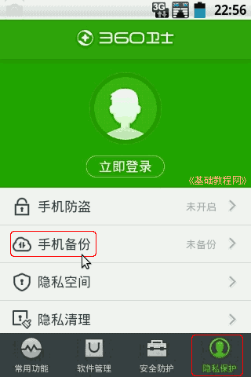 
4）备份资料需要登录360账号；
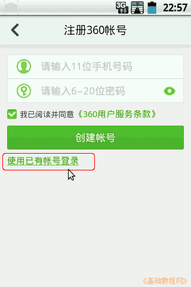
5）点按“卫士设置”可以设置各项参数，在通用里可以退出手机卫士；
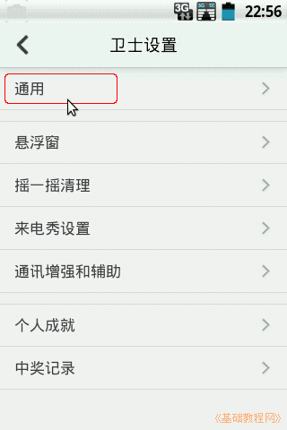 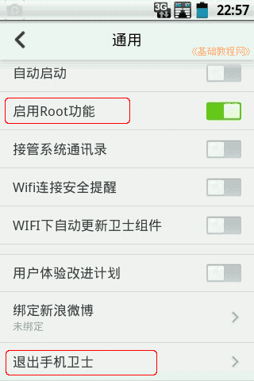
本节学习了手机卫士的基础知识，如果你成功地完成了练习，请继续学习下一课内容；
本教程由86团学校TeliuTe制作|著作权所有
基础教程网：http://teliute.org/
美丽的校园……
转载和引用本站内容，请保留作者和本站链接。